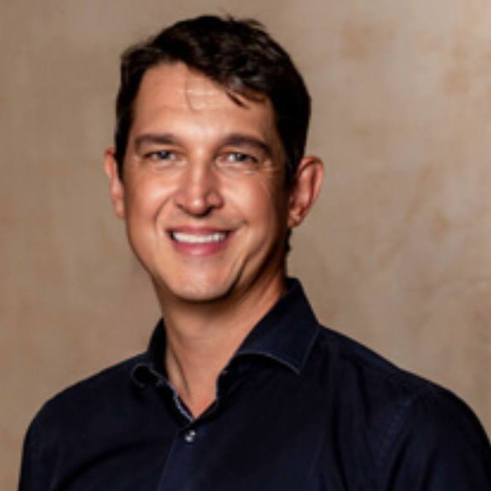
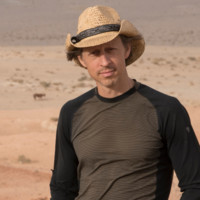
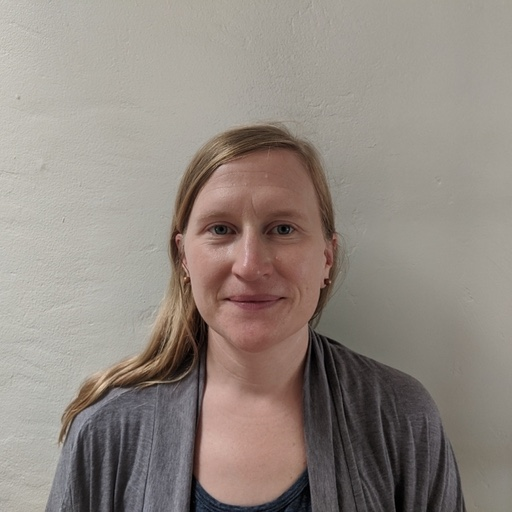

|
Dr. Melanie Moses
- Principle Investigator
- Professor, Department of Computer Science
- Professor, Biology Department
- External Faculty, Santa Fe Institute
We live in a complex world. From the spread of disease in increasingly interconnected human populations to the impact of fossil-fueled economies on global climate, the greatest challenges in modern science and engineering require understanding complex systems, what makes them efficient and resilient, and why they fail. My lab studies complex biological systems including the adaptive immune system and ant colonies. I use this understanding to design efficient, robust, adaptive and scalable engineered systems, including autonomous robots that mimic ant behaviors to collect resources cooperatively.
|
|  |
Dr. Matthew Fricke
- Co-Principle Investigator
- Research Assistant Professor, Department of Computer Science
- Research Assistant Professor, Center for Advanced Research Computing
VolCAN requires the coordination of distributed robot swarms to successfully search in large hazardous regions. My work falls into three related categories: distributed biological processes (e.g. chemical reaction networks, immunological and social-insect search processes, and neural networks), parallel supercomputing, and algorithms for robot swarms. Robots can explore areas too dangerous for humans and therefore help to answer basic scientific questions. In the VolCAN project, we designed and built aerial robots and algorithms to sample gasses from volcanos. This data contributes to our understanding of climate change, the prediction of eruptions, and how best to coordinate teams of robot scientists in general.
|
|
Dr. Tobias Fischer
- Co-Principal Investigator
- Professor: Earth and Planetary Sciences
Globally about 60 volcanoes erupt each year and about 20 million people live within 10 km of volcanoes that last erupted within the past 500 years. Even some modest size eruptions like the 2014 event at Eyjafjallajokull, Iceland can have multi-billion dollar global impacts. While volcanic eruptions can be devastating, they are also often predictable if adequate monitoring systems are in place that include geophysical and geochemical measurements. My research group has focussed on understanding the geochemical signals of volcanoes by studying gas emissions using direct sampling and ground-based remote sensing approaches. Through the VolCAN project we aim to obtain such chemical data of volcanic plumes during time of quiescence and closer to eruptions when approaching volcanoes to collect samples is too hazardous. This information will inform volcano models and improve forecasting to save lives.
|
<
|  |
Dr. Scott Nowicki
- Co-Principal Investigator
- Adjunct Professor: Department of Computer Science
My expertise is in the application of the latest geospatial research and tools to problems in environmental monitoring and infrastructure resilience. I've worked on multiple planets, from Mars landing site analysis, to remote tree species mapping and active wildfire operations. With funding sources that range from NASA to local governments and utilities, I often blur the line between academic research and industry. I received my PhD from the School of Earth and Space exploration at Arizona State University while working on four active missions to Mars. Currently I am head of R&D at the remote sensing company Quantum Spatial, where I focus on the application of drones and robots with hyperspectral and thermal remote sensing, tackling the effects of a changing climate and a population that continues to explode.
|
|
Dr. Rafael Fierro
- Co-Principal Investigator
- Professor: Electrical and Computer Engineering
- Professor: Mechanical Engineering
TBD
|
|
Dr. Jared Saia
- Co-Principal Investigator
- Professor: Department of Computer Science
I obtained my PhD from the University of Washington in 2002. I have broad research interests in theory and algorithms, with strong interests in distributed algorithms, security, game theory, and spectral methods. A general interest is determining how large groups can function effectively even without a leader. I am the recipient of the NSF CAREER Award, the School of Engineering Junior and Senior Faculty Research Excellence Awards, and several best paper awards. In my free time, I enjoy mountain biking, hiking and travel (recently around New Mexico).
|
|
- Research Assistant
- PhD Student: Department of Computer Science
John Ericksen is a software developer with Honeywell Federal Manufacturing and Technologies and a
computer science Ph.D. student at the University of New Mexico with the Moses Biological Computation
Lab. Working with the earth and planetary sciences department, John's research focus is on
autonomous airborne robot swarms used to sample volcanic CO2 plumes. The goal of this is to link
volcanic CO2 output with volcanic behavior to better understand the precursors to life-threatening
eruptions. John has also published on a variety of other research topics including software
architecture, evolutionary complex systems, and intelligent swarm robotics. John holds a computer
science Batchelor's degree from Western Washington University and a computer science Master's degree
from the University of New Mexico. At Honeywell, John works with a team of software developers that
develop software solutions in a variety of contexts to the Federal Government. In his free time,
John likes to spend his time underwater. He enjoys scuba diving throughout the United States and the
Caribbean, works as a scuba diving instructor at a shop in Albuquerque, and loves nature
photography, especially the underwater variety.
 |
Jarett Jones
- Research Assistant
- Undergraduate: Department of Computer Science
TBD
|
|  |
Julie Hayes
- Research Assistant
- Phd Student: Department of Computer Science
TBD
|
|
Samantha Wolf
- Research Assistant
- Undergraduate: Environmental Science
My name is Samantha Wolf and I am an Environmental Science student minoring in Geographic Information Science (GIS) here at the University of New Mexico. I am interested in the applications of remote sensing in monitoring changes in the environment and characterizing natural hazards. My current research focuses on identifying and quantifying the relationship of carbon dioxide and heat fluxes from volcanic settings using Advanced Spaceborne Thermal Emission and Reflection Radiometer (ASTER) data, FLIR thermal images and ground-based carbon dioxide flux measurements. Some goals of my research include better understanding the precursors to volcanic eruptions and determining at what spatial and temporal scales changes in volcanic activity indicate dangerous eruptions may occur. Overall, my research aims to help improve eruption forecasting so communities in volcanic regions can respond efficiently and effectively to dangerous events as they arise.
|
|
Isaac Seslar
- Research Assistant
- Masters Student: Electrical Computer Engineering
My name is Isaac Seslar and I’m a Master’s student in the Mechanical Engineering Department at the University of New Mexico. I am currently an intern at Sandia National Laboratories in the Robotics and Counter-robotics lab where my research focus is on counter-UAS development. I am also a Project Assistant in the MARHES lab at UNM where my research goals are in parallel with the aforementioned Sandia research. I have an interest in airborne mobile defense, tracking algorithms, machine learning, computer vision, 3d printing and design, and robotic hardware in general. I also have a broad passion for robotics and how we can use them to save lives, reduce our environmental impact, and protect privacy.
|